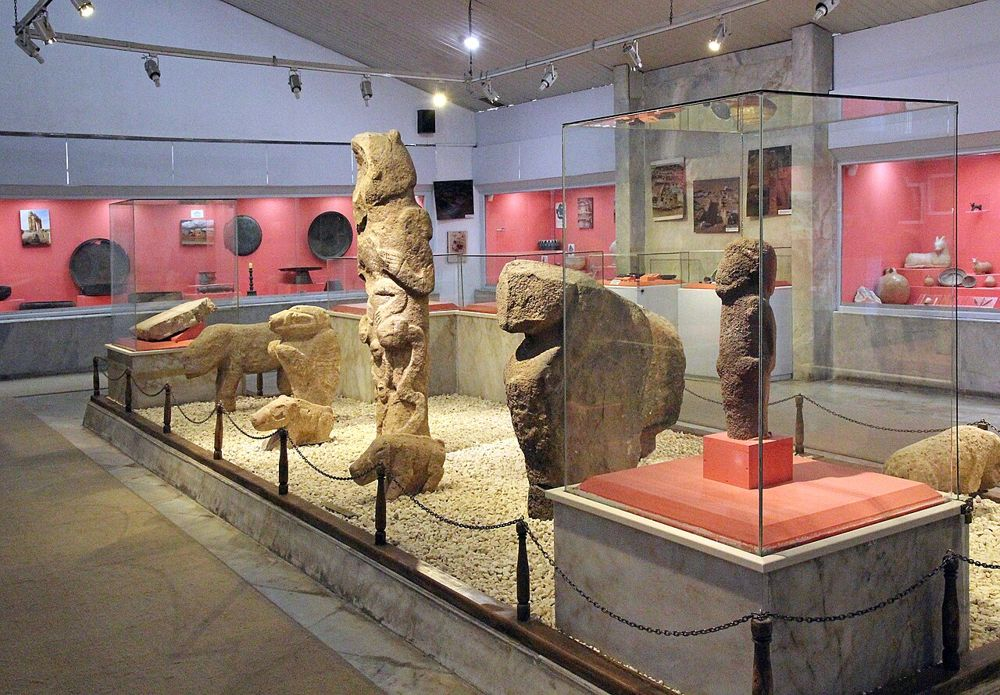
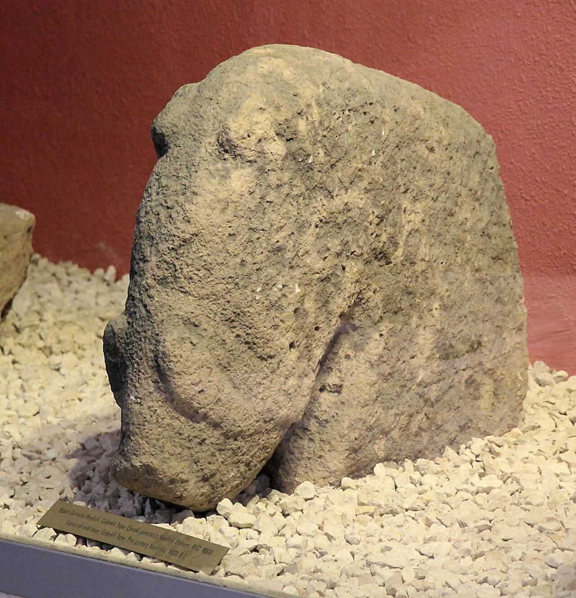

1Bir tepedeki sır
Şanlıurfa'nın yaklaşık 15 km kuzeydoğusundaki bir tepe, 1960'larda yapılan bir yüzey araştırmasında fark edildi ama önemi anlaşılamadı. 1995'te Alman arkeolog Klaus Schmidt'in başlattığı kazılar ise dünyayı şaşırttı.
Toprağın altında, daireler hâlinde dizilmiş, T biçimli devasa dikilitaşlar vardı. Bazıları 5 metreyi aşıyor ve tonlarca ağırlığındaydı.

2Taşların üzerindeki hayvanlar
Dikilitaşların üzerinde tilki, yaban domuzu, yılan, turna, akbaba ve akrep gibi hayvanların kabartmaları bulunur. Bazı dikilitaşlarda kollar, eller ve kemerler de oyulmuştur. Bu da T biçimli taşların insan ya da insan benzeri varlıkları temsil ettiğini düşündürüyor.
Alanda ayrıca yaban domuzu gibi hayvanları gösteren heykeller de bulundu. Bu eserlerin bir kısmı bugün Şanlıurfa Arkeoloji Müzesi'nde sergileniyor.
3Ne kadar eski?
Göbeklitepe'nin ilk yapıları yaklaşık MÖ 9600'e, yani bugünden 11.000 yıldan fazla öncesine tarihleniyor. İngiltere'deki Stonehenge ise yaklaşık MÖ 3000'de yapılmaya başlandı. Aradaki fark 6.000 yılı aşıyor.
Karşılaştırma için: Göbeklitepe, Mısır'daki Büyük Piramit'ten yaklaşık 7.000 yıl daha eskidir. Göbeklitepe yapıldığında yeryüzünde henüz yazı, tekerlek, metal aletler ve çanak çömlek yoktu.

4Neden bu kadar önemli?
Uzun süre arkeologlar, insanların önce tarıma geçip köylere yerleştiğini, ancak daha sonra yeterli zaman ve iş gücüne sahip olunca büyük anıtlar ve tapınaklar inşa edebildiğini düşünüyordu.
Göbeklitepe bu sıralamayı sorguladı. Çünkü burayı inşa edenler henüz tarım yapmayan, avcılık ve toplayıcılıkla geçinen insanlardı. Klaus Schmidt, büyük toplulukların bu tür anıtları yapmak için bir araya gelmesinin, yerleşik hayata ve tarıma geçişi hızlandırmış olabileceğini öne sürdü. Bu konuda araştırmalar hâlâ sürüyor.
Alan 2018'de UNESCO Dünya Mirası Listesi'ne alındı. Yakınındaki Karahantepe gibi benzer yerleşimlerde de kazılar devam ediyor.
💡 Biliyor muydun?
- Göbeklitepe'deki yapıların bilinçli olarak toprakla doldurulduğu düşünülüyordu. Ancak yeni araştırmalar bunun kısmen doğal süreçlerle de olmuş olabileceğini gösteriyor.
- Bölgede kazısı süren Karahantepe ve diğer yerleşimlere birlikte 'Taş Tepeler' adı veriliyor.
- Göbeklitepe'nin bulunduğu Bereketli Hilal bölgesi, buğday gibi bitkilerin ilk kez evcilleştirildiği yerlerden biridir.
✅ Kaynaklar
- UNESCO — Göbekli Tepe
- UNESCO — Stonehenge, Avebury and Associated Sites
- Wikipedia — Göbekli Tepe (kaynakçalı)
📷 Görseller
- Kapak: Teomancimit · CC BY-SA 3.0 · Wikimedia Commons
- Şanlıurfa Arkeoloji Müzesi'nde Göbeklitepe'den çıkarılan dikilitaşlar ve heykeller: Klaus-Peter Simon · CC BY-SA 3.0 · Wikimedia Commons
- Göbeklitepe'de bulunan yaban domuzu heykeli: Klaus-Peter Simon · CC BY-SA 3.0 · Wikimedia Commons